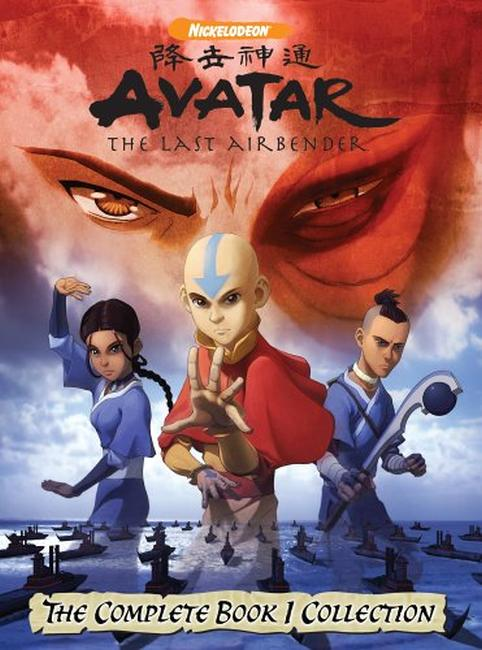
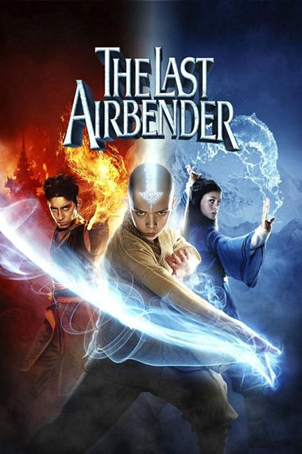

Avatar: The Last Airbender (Avatar: The Legend of Aang in some regions) is an American animated television series that aired for three seasons on Nickelodeon. The series began in February 2005 and concluded with a two-hour episode titled Sozin's Comet in July 2008.
Avatar: The Last Airbender is set in an Asiatic-like world in which some people can manipulate the classical elements with psychokinetic variants of the Chinese martial arts known as "bending". The series is presented in a style that combines anime with American cartoons and relies on the imagery of East-and-South Asian, Inuit, and New World societies. It follows the protagonist, twelve-year-old Aang and his friends, who must bring peace and unity to the world by ending the Fire Lord's war with three nations.
The series was commercially successful and was acclaimed by audiences and critics who praised its art direction, humor, cultural references, characters, and themes. It was nominated for—and won—Annie Awards, Genesis Awards, a Primetime Emmy Award, and a Peabody Award.
The first season's success prompted Nickelodeon to order a second and third season and the series inspired a critically panned but financially successful live-action film, The Last Airbender, which was directed by M. Night Shyamalan. Merchandising for the series consisted of action figures, a trading card game, three video games, stuffed animals distributed by Paramount Parks, and two Lego sets. An art book was published in June 2010. A sequel series titled The Legend of Korra aired from 2012 to 2014. The complete series was released on Blu-Ray in May 2018 for the 10th anniversary of season 3's finale.
The Last Airbender is a 2010 American action fantasy adventure film written, co-produced, and directed by M. Night Shyamalan. It is based on the first season of the Nickelodeon animated series of the same name. The film stars Noah Ringer as Aang,with Dev Patel as Prince Zuko, Nicola Peltz as Katara, and Jackson Rathbone as Sokka. Development for the film began in 2007. It was produced by Nickelodeon Movies and distributed by Paramount Pictures. Premiering in New York City on June 30, 2010, it opened the following day in the rest of the US, grossing an estimated $16 million.
Avatar: The Last Airbender is set in a world—adjacent to a parallel spirit world—that is home to humans and hybrid animals. Human civilization is divided into four nations, named after the four classical elements: the Water Tribes, the Earth Kingdom, the Fire Nation, and the Air Nomads. Each nation has a distinct society in which select people, known as "benders" (waterbenders, earthbenders, firebenders and airbenders), have the ability to telekinetically manipulate and control their nation's element using martial arts.
Only the Avatar has the ability to bend all four elements. The Avatar, who may be male or female, is an international arbiter whose duty is to maintain harmony among the four nations, and act as a mediator between humans and spirits. When the Avatar dies, their spirit is reincarnated into the next of the four nations in what is known as the Avatar cycle: the Fire Nation, Air Nomads, Water Tribe and Earth Kingdom.
An Avatar is required to master each bending art, beginning with the element of their home nation, and proceeding to learn the others in the order of the Avatar cycle, starting at the age of sixteen. Avatars also possess the ability to enter a condition known as the Avatar State, in which they gain the knowledge and abilities of all past Avatars. Although it is when they are most powerful, if an Avatar were ever to be killed while in the Avatar State, the reincarnation cycle would end and the avatar would never again be reborn.